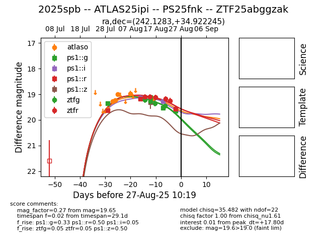

Target 2025spb at 2025-08-26 14:47, see:
FINK: fink-portal.org/ZTF25abggzak
Lasair: lasair-ztf.lsst.ac.uk/objects/ZTF25abggzak
ALeRCE: alerce.online/object/ZTF25abggzak
TNS: wis-tns.org/object/2025spb
YSE: ziggy.ucolick.org/yse/transient_detail/2025spb
alt names
ZTF25abggzak (ztf,fink)
2025spb (tns,yse)
PS25fnk (panstarrs)
ATLAS25ipi (atlas)
coordinates:
equatorial (ra, dec) = (242.1283,+34.92225)
galactic (l, b) = (56.0718,+47.49253)
photometry
last atlaso=19.16, ps1::g=19.65, ps1::i=19.27, ps1::r=19.57, ps1::z=19.30, ztfg=19.45, ztfr=19.25
7 atlaso, 4 ps1::g, 2 ps1::i, 3 ps1::r, 1 ps1::z, 4 ztfg, 5 ztfr detections
